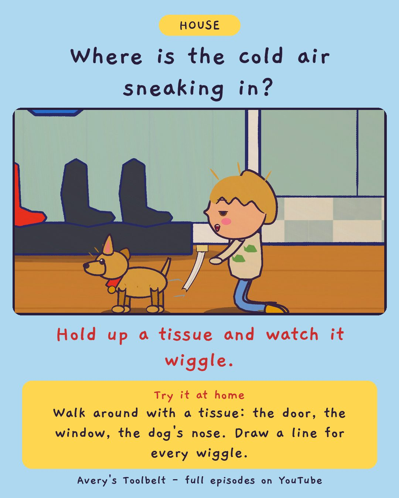

The DraftWhy Is the Floor So Cold?
那道風

Where is the cold air sneaking in?
Hold up a tissue and watch it wiggle.
Try it at home
Walk around with a tissue: the door, the window, the dog's nose. Draw a line for every wiggle.
Free printable coloring page (PDF) Watch the full episode on YouTubeAbout this episode, for grown-ups
It is November in Minnesota, and there is a cold stripe on Avery's bedroom floor. She gets down on her stomach with the flashlight, finds a gap by the bookshelf, and blocks it with a rolled-up towel. The floor is exactly as cold the next morning.
She finds more gaps and blocks those too. Mom shows her the best draft-finder there is: a strip of tissue. Gus gets one as well, and holds it to the fridge, the keyhole, the dog (twice) and the television, shouting STRONG DRAFT at every one of them. Then the tissues show Avery something backwards.
What children find out: warm air goes UP and pushes out at the top of the house. Every bit that leaves pulls a cold bit in at the bottom - which is why the cold is at your feet.
For grown-ups: an episode about doing it right six times and changing nothing. "Four nights is a lot of nights."